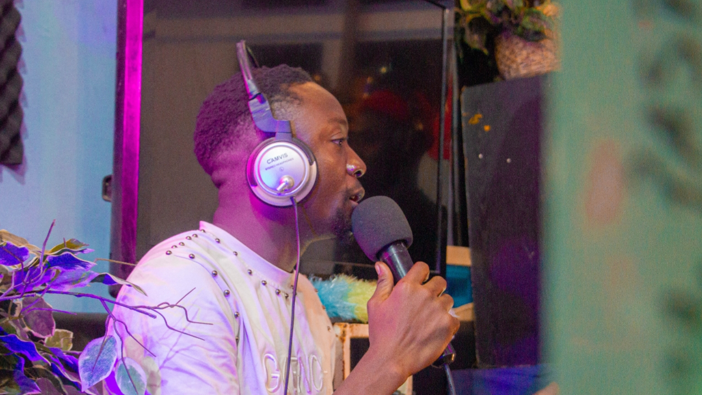
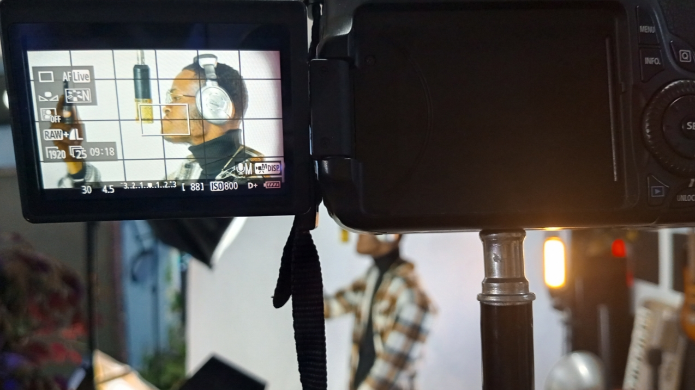
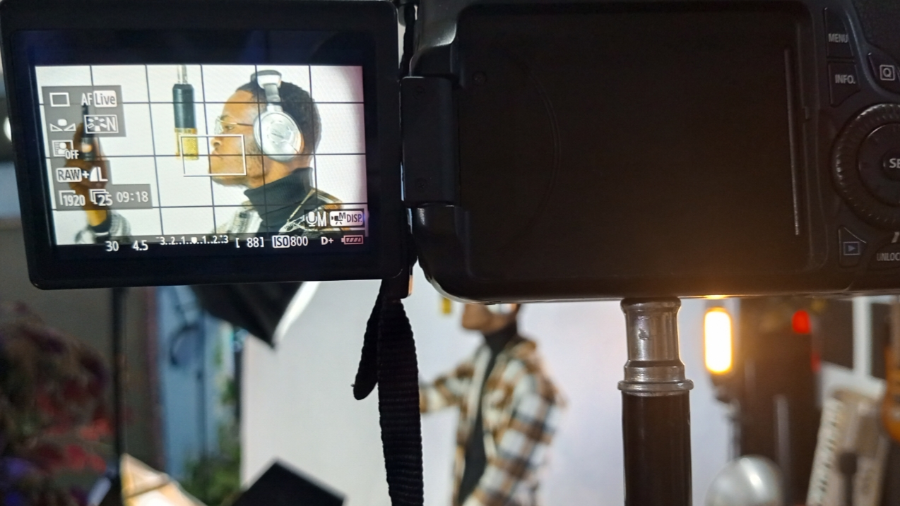
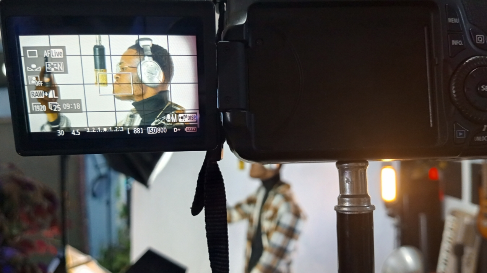

Nos Projets
Projets Musique 🎶
Découvrez nos créations musicales, nos collaborations et les artistes que nous accompagnons dans leur parcours.
Projets Vidéo 🎥
Clips, interviews et productions visuelles qui donnent vie aux idées et aux émotions.

Projets Photo 📸
Shooting artistique, événements et moments capturés par l’œil MistergloKin.
✨ Travaillons Ensemble
Vous avez un projet ? Que ce soit en musique, en vidéo ou en photo, notre équipe est prête à collaborer avec vous.

 


